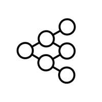
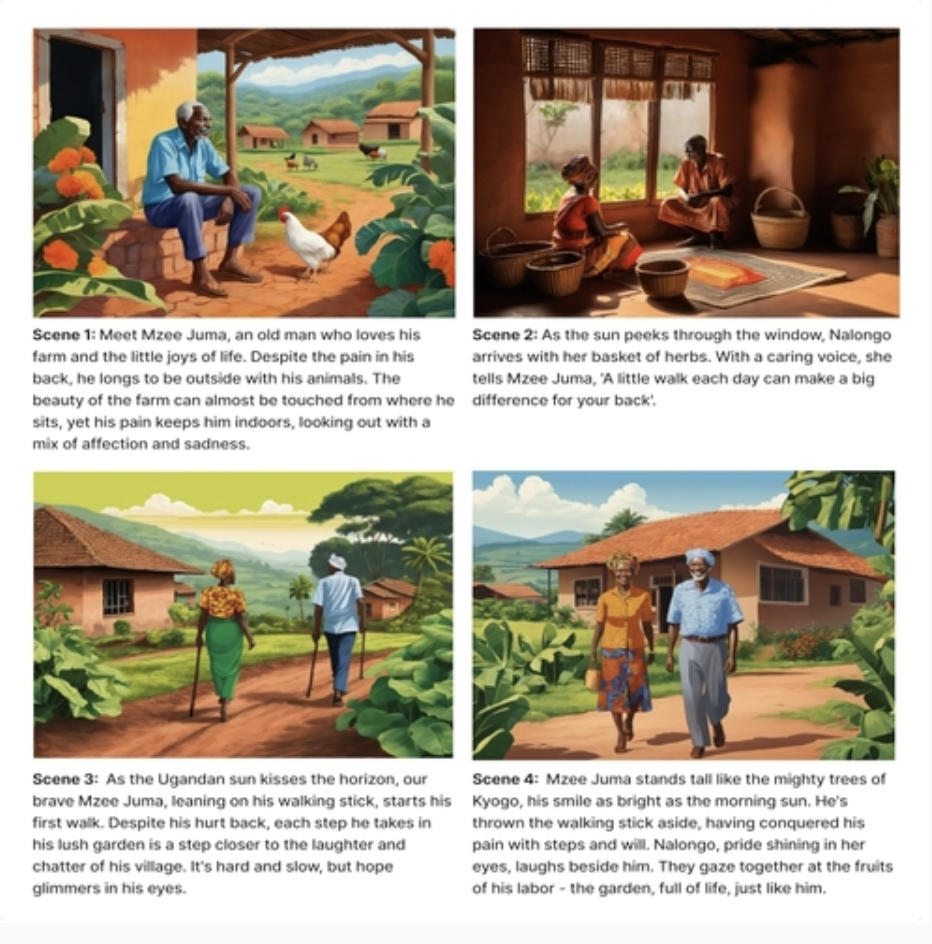
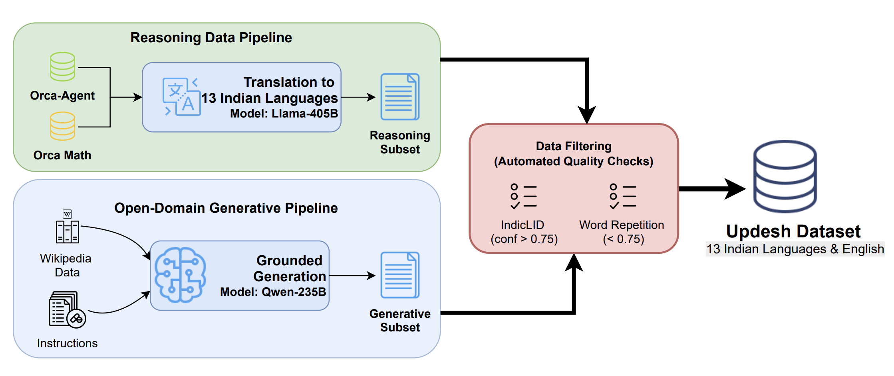
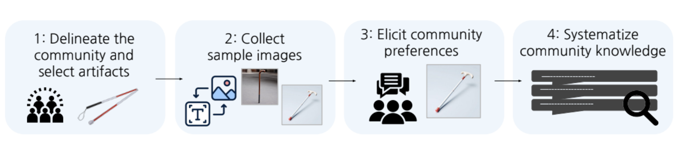
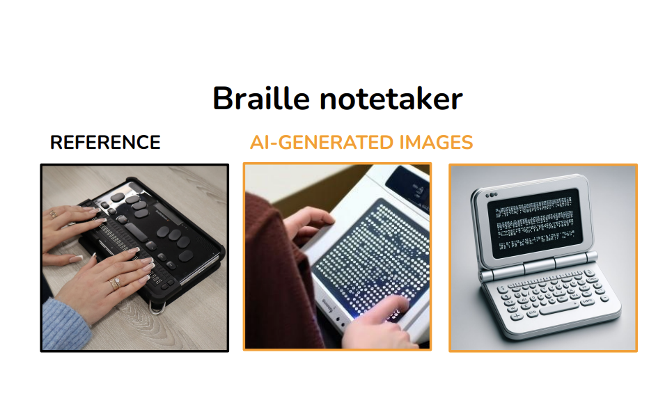
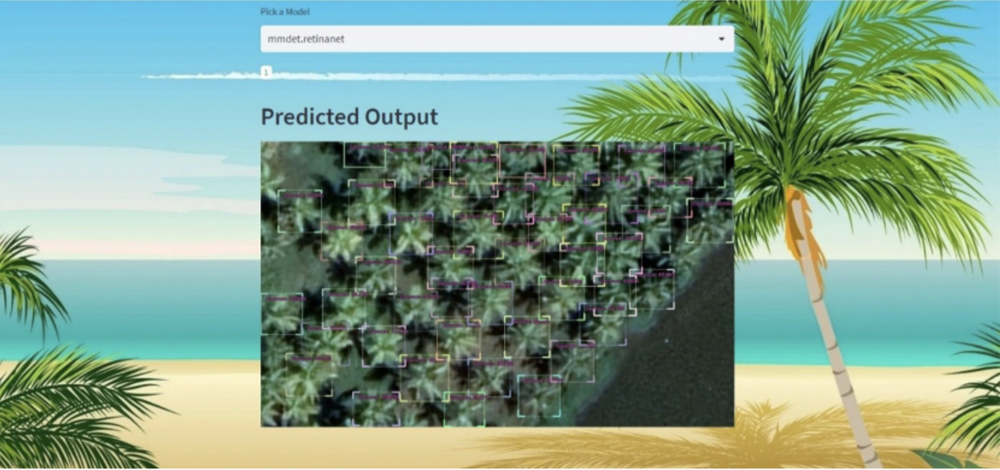
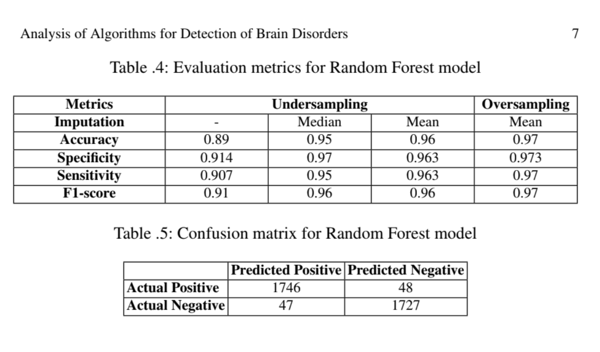
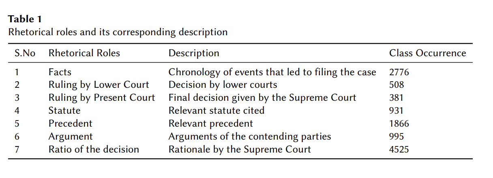

Self-motivated technology professional with strong business acumen and a passion for AI/ML. Experienced in leading projects, working as a team, and mentoring peers, I am eager to leverage my entrepreneurial mindset to drive innovative AI/ML products that deliver impactful outcomes.







